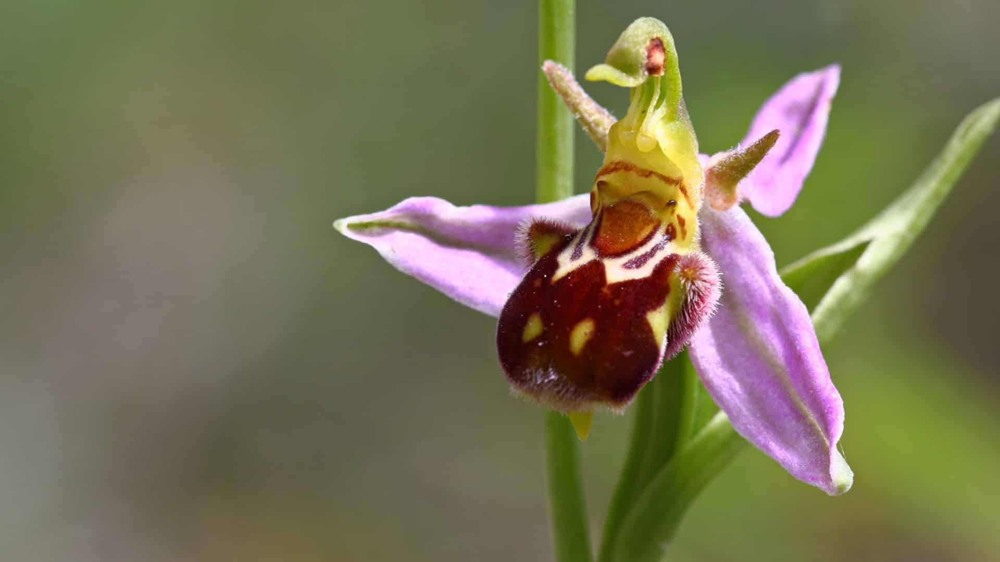

Xarıbülbül — bitkilər aləminin qulançarçiçəklilər dəstəsinin səhləbkimilər fəsiləsinin ofris cinsinə aid bitki növü. Xarıbülbül çoxillik ot bitkisidir. Gövdə 20–40 sm hündürlükdədir. Soğanaqları şarvari və ya xırda-ellipsvaridir. Yarpaqları gövdənin qaidəsində yerləşir, uzunsov-lansetvari və ya uzunsov-ellipsvari, eni 2–3 sm, uzunluğu 5–10 sm-dir. Çiçək qrupu seyrəkdir, 5–6 çiçəkdən ibarətdir. Çiçəkyanlığının kənar ləçəkləri 12-sm uzunluğunda açıq-bənövşəyi rənglidir. Daxili ləçəklər 3 sm uzunluqda oval-lansetvari, bənövşəyi və birdamarlıdır. Dodaqcıq məxmərvaridir, yuxarı hissədə irəliyə doğru qısa əlavə çıxıntısı var, qonur, üzəri bir neçə sarımtıl ləkəlidir, hər biri ensiz, açıq-sarı haşiyəlidir.
